巻き爪
爪の端が食い込んで歩くと痛い方へ
- 靴を履くと親指が痛む
- 病院に行くほどではないけど気になる
- 深爪を繰り返している
- 自分で切っても改善しない
放置すると
痛みが強くなる、歩き方が変わる、爪の変形が進む、炎症や化膿につながることもあります。
完全予約制 | 男性もOK | 熊本県合志市須屋
食い込み・厚み・痛み・見た目の不安を、状態確認から再発予防のアドバイスまで丁寧にサポートします。
営業時間 9:00-17:00 / 土日祝休み / 症状に合わせてメニューをご提案
その場だけのケアではなく、再発しにくい健康な爪へ。
爪の食い込み、厚み、変色、靴に当たる痛みなど、病院に行くほどではないけれど気になる足のお悩みもご相談ください。
Worries
巻き爪・分厚い爪は、痛みだけでなく歩き方や転倒リスクにも関わります。
巻き爪
痛みが強くなる、歩き方が変わる、爪の変形が進む、炎症や化膿につながることもあります。
分厚い爪
さらに厚くなり切りにくくなる、靴に当たり痛みが出る、歩き方が変わり膝や腰に負担がかかることがあります。
Why nico-a
爪の形・厚み・生活習慣を確認し、その場限りではなく普段の歩きやすさまで考えて整えます。
巻き爪矯正は透明テープを使用。普段の生活や見た目に配慮しながらケアします。
足専用の泡シャンプーで足浴を行い、爪周りや角質をやわらかくしてから整えます。
施術後の変化を確認し、ご自宅でできるケア方法や靴・爪切りの注意点もお伝えします。
Cases
爪の状態を確認し、痛み・見た目・歩きやすさの不安を少しずつ整えていきます。変化には個人差があります。
3カ月後の変化例
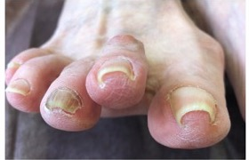
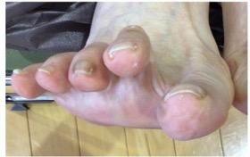
2カ月後の変化例
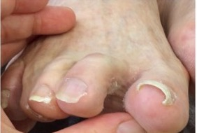
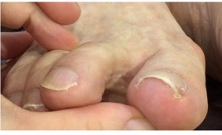
初回直後の変化例
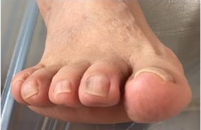
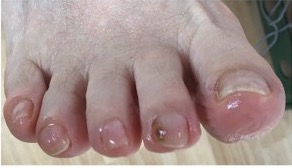
厚くなった爪のケア例
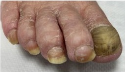
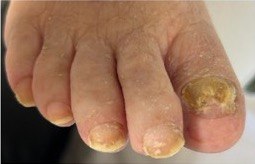
親指の厚みを整えた例
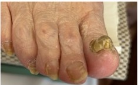
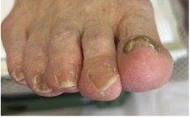
複数の爪を整えた例
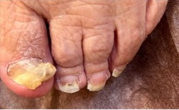
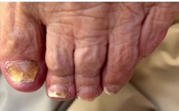
透明な補正器具を使い、痛みに配慮しながら爪の端の食い込みをケア。施術後は当日から普段通りの生活を目指します。
爪の厚みや変色、靴に当たる痛みが気になる方へ。厚みを軽減し、見た目と日常の負担をやわらげます。
大切にしていること
Flow
カウンセリングからアフターケアまで、状態を確認しながら進めます。
お悩みや生活習慣を伺い、足や爪の状態を確認します。
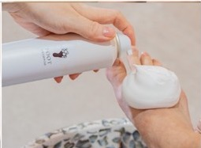
足専用の泡シャンプーで足浴を行います。
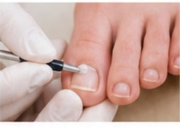
爪周りの汚れや古い角質を丁寧に除去します。
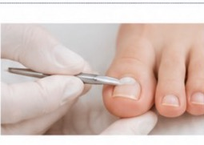
巻き爪・肥厚爪・タコ・魚の目など、お一人おひとりの状態に合わせて適切な施術を行います。
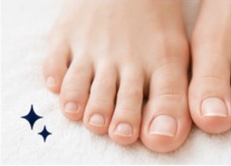
施術後の変化をご確認いただき、再発予防までサポートします。
Visit Care
「車に乗るのが大変」「施設から連れて行けない」「家族の足爪を見てほしい」など、来店が難しい場合もご相談ください。
介護福祉士としての経験を活かし、足元から暮らしを支えます。
Profile
病院と施設での経験から、もっと利用者さんに寄り添うケアをしたいという想いが強くなりました。
介護の現場では「爪が分厚い」「巻き爪は仕方ない」と我慢している方を多く見てきました。足の爪を整えることは、歩きやすさや毎日の気持ちにもつながります。
FAQ
透明な補正テープを使用するため目立ちにくく、上からマニキュアを塗ることもできます。
状態にもよりますが、当日から普段通りの生活を目指してケアします。靴や歩き方の注意点もお伝えします。
LINEまたはお電話で症状を伺い、当日の確認後に必要なケアをご案内します。無理な施術は行いません。
まずは状態をお聞かせください。出血、腫れ、化膿、強い炎症がある場合は医療機関の受診をおすすめすることがあります。
Access
Reservation
予約フォームから空き時間を確認できます。LINEなら爪の写真を添えて相談できます。
出血・化膿・強い炎症など医療的な処置が必要と考えられる場合は、医療機関の受診をおすすめします。